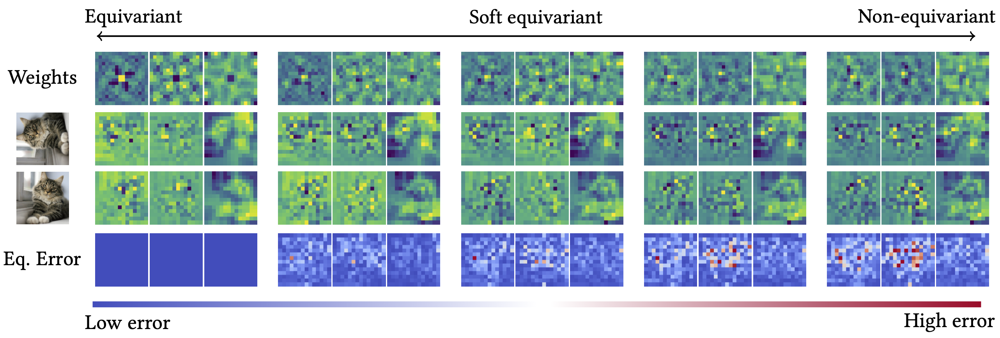
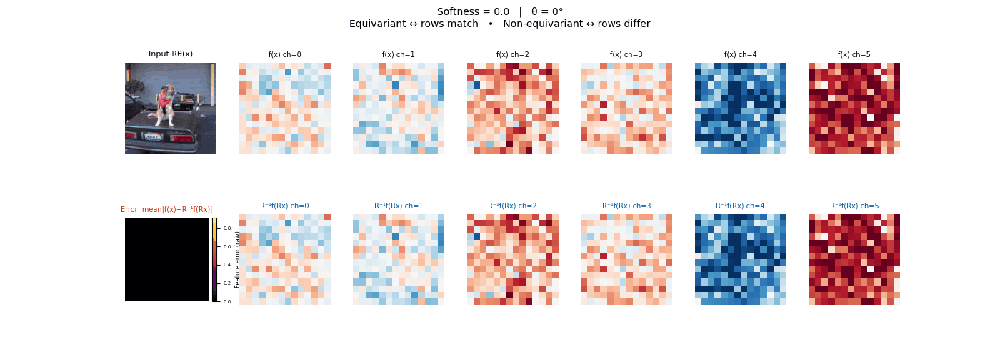
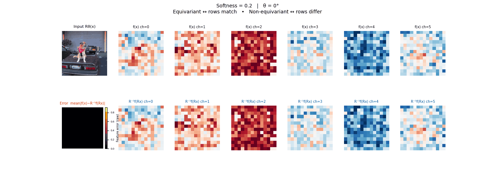
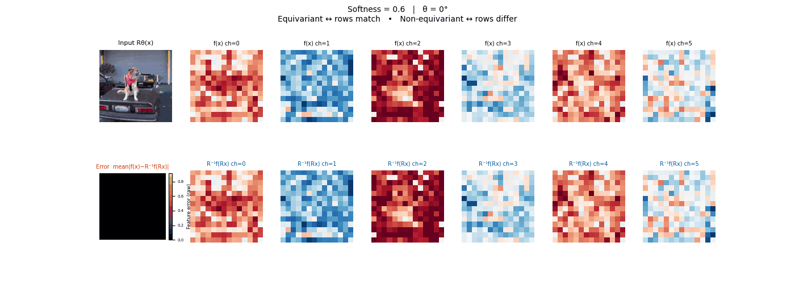
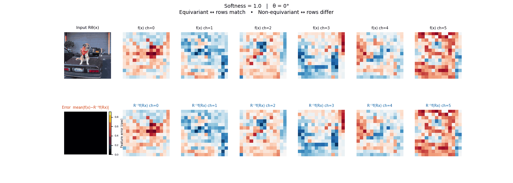
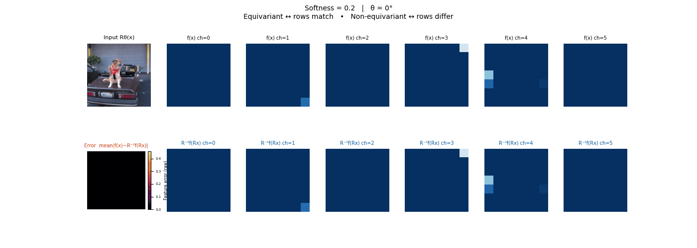
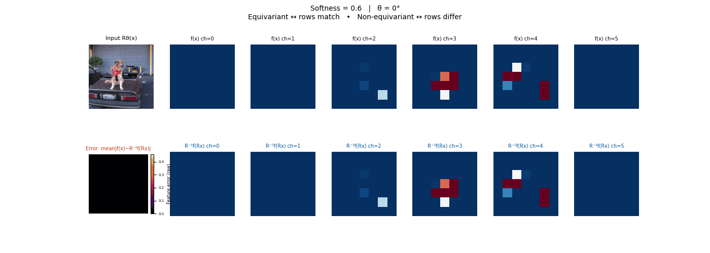
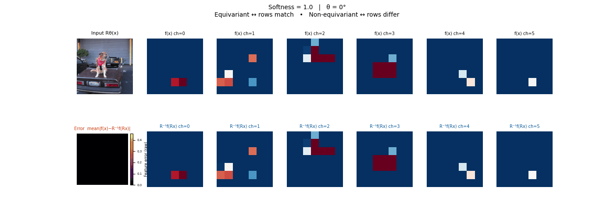

Tunable Soft Equivariance with Guarantee
A framework for injecting tunable symmetry into any pretrained model — without adding learned parameters — by projecting weights through soft equivariant filters controlled by a single scalar b.

Two extremes, both costly
Pretrained vision and scientific models are powerful but symmetry-unaware — rotate the input and the output changes unpredictably. Strict equivariance fixes this but often forces training from scratch, discarding pretrained representations and over-constraining the model in settings where only approximate symmetry holds.
Neither extreme is satisfactory: one ignores symmetry entirely; the other enforces it too rigidly at too high a cost.
Symmetry as a dial, not a switch
- Project weights via soft equivariant filters.
- Single scalar b tunes equivariance level with provable bound.
- General framework: plug-in soft equivariance for any model.
- Theoretical bounds on equivariance error controlled by b.
- Validated on ViT, DINOv2, ResNet, SegFormer; improves off-the-shelf models.
Project into subspaces with controllable equivariance error
For a linear map W with input/output group representations
ρX and ρY, the equivariance condition
ρY(g)W = WρX(g) defines a linear subspace
of weight space. The projector P(W) is the orthogonal projection onto
this subspace.
# Equivariance constraint: ρ_Y(g) W = W ρ_X(g) # 1. Build Kronecker constraint matrix L: L = dρ_Xᵀ ⊗ Id′ − Id ⊗ dρ_Y L · vec(W) = 0 # equivariant subspace # 2. Project with cut-off b: keep basis vectors with σi < b (smaller b ⇒ stricter equivariance)
The equivariance error is provably bounded and controlled by b, providing a formal guarantee at any operating point.
y = wᵀx, decompose the Lie-algebra action
dρ(A) = UΣVᵀ and keep basis vectors with σi < b.
The filter Binv projects into low-sensitivity directions.
y = Wx, form the operator
L = (dρXᵀ ⊗ I − I ⊗ dρY) and project
vec(W) = Beqθ using the σi < b subspace.
This guarantees bounded equivariance deviation.
dρ, enabling blockwise
constraints (e.g., 2×2 rotation blocks) and a fast projection.
Complexity improves to O(max(d, d')³) vs.
O((d·d')³) for naive SVD.
The same recipe applies across architectures and groups:
FilteredConv2d, FilteredLinear). Projectors are computed once from the group structure.b ∈ [0, 1] to fix the symmetry level. Optionally fine-tune with b held fixed to recover task performance at the chosen operating point.Drag each slider — watch the symmetry change
Each animation sweeps the input image through a full 360° rotation.
The top row shows fb(Rθx) — features of the
rotated input. The bottom row shows Rθ−1fb(x)
— the inverse rotation applied to features of the original input.
The bottom-left error map shows their discrepancy.




Final-layer feature maps under a continuous 360° rotation test. Patch projection and positional embeddings are projected via the Schur filter.



Final-layer feature maps under the same 360° rotation test. All convolutional layers are projected; 1×1 skip connections are left unchanged.
Scientific groups: SO(3) and O(5)
The weight projection framework extends naturally to equivariant MLPs for scientific computing. Swapping in the group-specific Lie algebra generators (or forward differences for discrete groups) is all that changes — the interpolation and error guarantee are identical. Both animations sweep rotation angles; the error distributions confirm that equivariance is exact at b = 0 and degrades monotonically as b increases.
Wrap any pretrained model in three lines
Specify the symmetry group and the control value b. No architecture changes, no new parameters, no modifications to the training objective.
from standalone.vit_soft_equivariance_standalone import monkeypatch_vitembeddings
from standalone.resnet_soft_equivariance_standalone import convert_cnn_to_filtered
filter_config = {"n_rotations": 4, "soft_thresholding": 0.2,
"soft_thresholding_pos": 0.2, "group_type": "rotation"}
monkeypatch_vitembeddings(model.vit.embeddings, filter_config)
# For CNNs: convert_cnn_to_filtered(model, filter_config)
Standalone single-file demos are in standalone/.
Group-specific notebooks with full derivations are in notebooks/.
In code the control parameter is named softness and corresponds to b here.
See the repo for training scripts and filter factory docs.
BibTeX
If this work is useful to your research, please cite:
@InProceedings{rahman2026tunable,
author = {Rahman, Md Ashiqur and Hao, Lim Jun and Jiang, Jeremiah
and Lim, Teck-Yian and Yeh, Raymond A},
title = {Tunable Soft Equivariance with Guarantee},
booktitle = {Proceedings of the IEEE/CVF Conference on Computer
Vision and Pattern Recognition (CVPR)},
year = {2026}
}